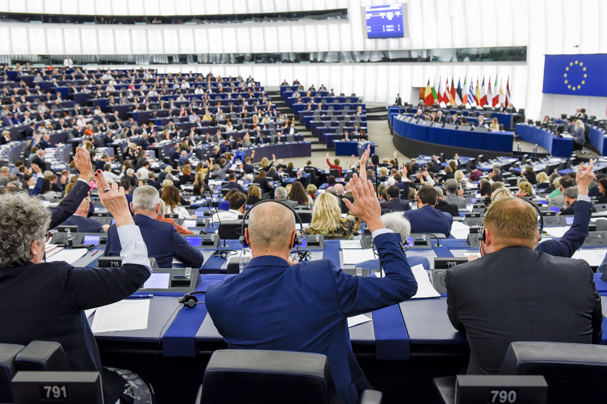
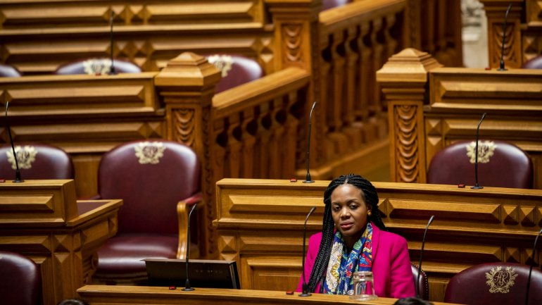
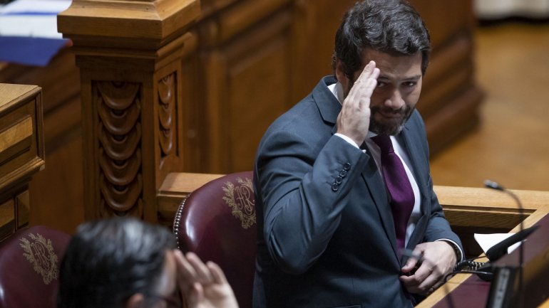

O Parlamento Europeu aprovou esta quarta-feira, em Bruxelas, o Acordo de Saída do Reino Unido da União Europeia, a última formalidade que faltava para que o Brexit se concretize na próxima sexta-feira, 31 de janeiro.
Numa votação em que bastava uma maioria simples dos votos expressos, o Parlamento Europeu “carimbou” a saída do Reino Unido da UE com 621 votos a favor, 49 contra e 13 abstenções.
Imediatamente a seguir ao anúncio do resultado, grande parte dos eurodepuatdos que compõem o hemiciclo deram as mãos e começaram a cantar “Auld Lang Syne”, uma canção tradicional baseada num poema de Robert Burns, que fala da importância de não esquecer velhos amigos, em homenagem aos deputados britânicos que deixam oficialmente o Parlamento Europeu a partir de sexta-feira.

Historiadora diz que Livre foi populista com proposta de devolver património das ex-colónias, não confia em geral nos dirigentes de outros países e defende ausência de ativistas de grupos de trabalho.
“A quem é que vamos devolver o património?”, interroga-se a historiadora Raquel Henriques da Silva, depois de o Livre ter proposto restituir bens culturais das ex-colónias aos países de origem. A diretora científica do Museu do Neorrealismo sublinhou a importância de conhecer os interlocutores desta medida, porque, “em geral”, os políticos destes países não lhe “permitiriam o menor sinal de confiança”.
Em entrevista à rádio Observador a académica começou por dizer que a proposta tem “uma carga política excessiva” para um tema cultural e acusa o partido de ser populista. Acrescenta ainda que a forma “solitária, provocatória e bombástica” como foi apresentada na Assembleia da República por Joacine Katar Moreira, deputada única do partido, é “para provocar reações mais do que [para] fazer trabalho”.

Grupos parlamentares e deputados únicos (à exceção de André Ventura) condenaram palavras do deputado do Chega sobre Joacine, mas não avançam com votos de condenação para não dar palco a Ventura.
Os líderes parlamentares decidiram esta manhã quase de forma unânime (só André Ventura ficou de fora) não avançar com um voto de condenação no Parlamento às declarações do deputado do Chega sobre a deputada do Livre, Joacine Katar Moreira. Ventura recusa pedir desculpa pelo que disse no facebook da deputada e reclama que se tratou de uma “ironia”.
Os votos de condenação que estavam a ser ponderados pelos partidos ao deputado André Ventura, caso do PS por exemplo, ficaram na gaveta, com PS, PSD, PCP, BE, CDS, Verdes, PAN e deputados únicos do IL e do Livre a cingirem-se ao “repúdio” das declarações do deputado do Chega sobre Joacine Katar Moreira que o presidente da Assembleia da República classificou de “xenófobas”.
E nós precisamos da natureza, ou não fizéssemos parte dela. Na realidade, precisamos de procurar forma de coexistirmos pacificamente porque, nesta luta, o Homem será sempre o elo mais fraco.
Somos cada vez mais a tomar consciência de que, se continuarmos a agir da mesma forma que nas últimas décadas, o mundo que deixaremos para as próximas gerações não será tão habitável, nem tão extraordinário na sua beleza e diversidade. Somos cada vez mais a dedicar o nosso tempo e talento a fazer a diferença. Estamos a engrossar as fileiras dos heróis que lutam por um futuro melhor para todos. Conheça os seus superpoderes, apenas para perceber que, no fundo, todos podemos ser heróis.
Sabemos que a natureza tem uma força própria, mas cada um de nós pode fazer a sua parte.